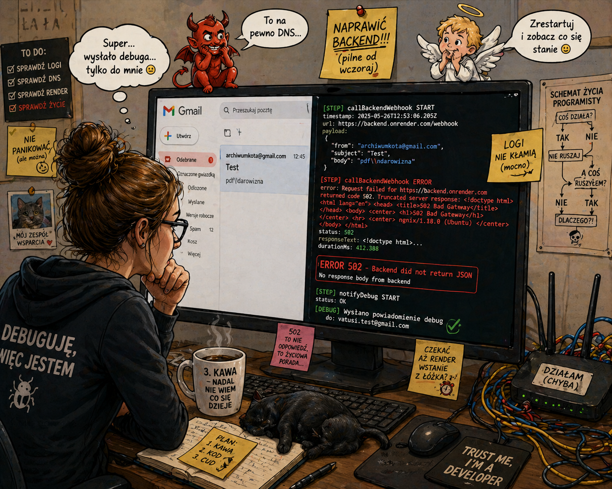

🤔
CO TO W OGÓLE JEST TEN "GAS"?
Słuchaj, GAS to skrót od Google Apps Script. Ale dla nas to oznacza "Giga-Automatyczny-Skaner"!
Wyobraź sobie, że Google to wielkie miasto, a GAS to niewidzialne elfy, które potrafią same otwierać Twoją pocztę, pisać w tabelkach i dzwonić do innych komputerów, kiedy Ty jesz lody. Nasza Sekretarka to szefowa tych elfów!
🕵️♀️
KROK 1: WIELKIE PRZESZUKIWANIE (Skanowanie poczty)
Sekretarka zakłada okulary detektywa i odpala funkcję AAA_processEmails. Wbiega do Twojego Gmaila i krzyczy:
"Czy są tu jakieś nowe listy?!".
Ale uwaga! Jeśli widzi list od jakiegoś nudziarza albo bota, odpala system _isBannedSender. To taki bramkarz pod dyskoteką – patrzy na listę BANNED_EMAILS i mówi: "Ty nie wchodzisz, masz za brzydkie znaczki!". Dzięki temu żaden spam nie zawraca jej głowy.
📝
KROK 2: WPIS DO WIELKIEJ KSIĘGI (Baza danych)
Gdy znajdzie fajny list, nie chowa go do kieszeni. Biegnie do Google Sheets (to taka wielka tabela, nasza SHEET_LOG_NAME) i zapisuje wszystko wielkim piórem:
"Dnia tego i tego, o godzinie tej, napisał do nas Jaś, a jego list ma numer MESSAGE_ID".
Na koniec przybija wielką, zieloną pieczątkę: ODEBRANO. Teraz już nikt nie powie, że list zginął!
📞
KROK 3: TELEFON DO SZEFA (Łączność z Pythonem)
Teraz najtrudniejsze. Sekretarka musi zadzwonić do Pana Pythona, który mieszka na dalekim serwerze RENDER_URL.
Używa do tego magicznego telefonu UrlFetchApp.
Sekretarka jest mega cierpliwa. Wie, że Pan Python czasem jeszcze śpi, więc ustawia deadline na 25 sekund. Siedzi z telefonem przy uchu i czeka, aż Python odbierze i powie: "Dobra, dawaj ten list, ja teraz wymyślę super odpowiedź!".
🦾
KROK 4: OPERACJA "NIE PODDAJEMY SIĘ" (System Retry)
A co jeśli Pan Python ma wyłączony telefon? Sekretarka nie idzie na drzemkę! Odpala procedurę _checkUnprocessedMessages.
Przegląda tabelkę i szuka tych, którzy mają pieczątkę ODEBRANO, ale nie mają pieczątki WYSŁANO.
Próbuje się dodzwonić MAX_RETRIES_PER_MSG razy (czyli 3 razy!). Jeśli po trzecim razie dalej nikt nie odbiera, Sekretarka robi się czerwona ze złości i wysyła maila SOS do Ciebie na ADMIN_EMAIL: "SZEFIE! WSZYSTKO SIĘ PALI! PYTHON NIE ODBIERA!". To się nazywa profesjonalizm!

DOKUMENTACJA ZAKOŃCZONA. MOŻESZ IŚĆ GRAĆ W ROBLOXA.